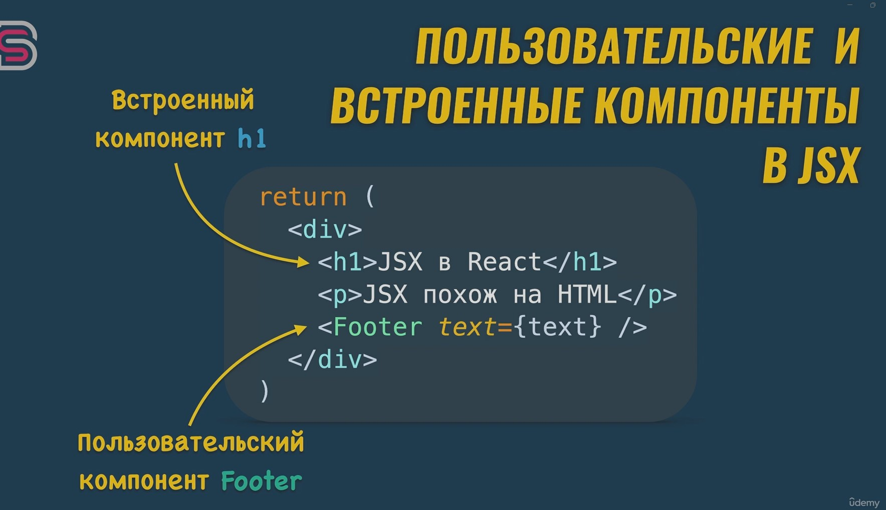

В React.js пользовательские и встраиваемые компоненты имеют решающее значение для создания модульных и многоразовых пользовательских интерфейсов. Давайте рассмотрим обе концепции.:
Пользовательские компоненты в React - это определяемые пользователем компоненты, которые вы создаете для инкапсуляции и организации частей вашего пользовательского интерфейса. Они помогают сделать ваш код более читаемым, ремонтопригодным и многоразовым. Вот базовый пример.:
React поставляется уже готовых уже компонентов там где вы видите div, h1, html элементы вы какрас используете встроенные в React компоненты это не html тэги это реакт компоненты а внутри реакта создана логика внутри того как создавать html тэги не посредственно реально в DOM а вот
а вот Footer в данном примере является компонентом который должны создать вы как пользователь реакта И реакт отличает встроеные компонент от пользовательского по первой букве открываюшем теге jsx если буква заглавная значить это пользовательский компонент если буква в нижнем регистре то это встроеный компонент
Вы можете использовать этот пользовательский компонент в другом файле:
Встроенные компоненты относятся к использованию компонентов внутри других компонентов. Это фундаментальная концепция в React, поскольку она способствует созданию модульного и повторно используемого кода. Например:
Как пользовательские, так и встроенные компоненты играют решающую роль в приложениях React, способствуя повторному использованию кода, ремонтопригодности и модульной структуре. Они позволяют вам разбивать сложные пользовательские интерфейсы на более мелкие, управляемые части, облегчая понимание и поддержку вашего кода.